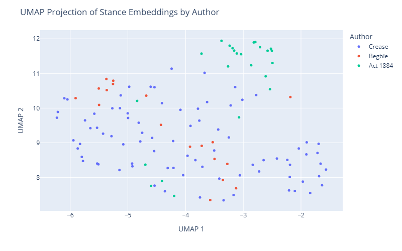

Embedding Driven Text Analysis of Crease’s Stance Towards Chinese Immigrants
This notebook aims to demonstrate how machine learning can assist with historical research. - Python - Word Embeddings - Sentiment Analysis
Author
prAxIs UBC Team Kaiyan Zhang, Irene Berezin, Alex Ronczewski
Published
4 August 2025
Library Loading
Code
# This cell loads the necessary libraries for executing the notebook.import pandas as pdimport numpy as npimport reimport umapimport textwrapimport matplotlib.pyplot as pltfrom matplotlib.patches import Patchimport seaborn as snsimport plotly.express as pximport plotly.graph_objects as gofrom plotly.subplots import make_subplotsfrom nltk import sent_tokenize, word_tokenizefrom nltk.corpus import stopwordsimport spacyfrom sklearn.feature_extraction.text import TfidfVectorizerfrom sklearn.metrics.pairwise import cosine_similarityfrom scipy.spatial.distance import cosinefrom transformers import AutoTokenizer, AutoModel, pipelineimport torchimport warningsfrom collections import defaultdict, Counterfrom typing import Dict, Any, Union
Introduction
Overview of Historical Background
The 1884 Chinese Regulation Act in British Columbia is widely regarded as one of the most notorious discriminatory provincial laws targeting Chinese immigration, it was challenged and ultimately declared unconstitutional in the 1885 case of R v. Wing Chong by the judge Henry Pering Pellew Crease. The Justice Crease found the legislation to be unconstitutional on economic grounds; infringing on federal authority over immigration, trade, commerce, treaty-making, and taxation.
The central figure in the ruling, Henry Pering Pellew Crease, came from a wealthy English military family, and possessed a prestigious law background.
His social identity was above-all English, and this was made clear in his politics.
He viewed Canada not as a new society to be built, but as an extension of the british empire.
He displayed mistrust towards Canadians, referring to them as “North American Chinamen”, afraid that they would “rule the country and job its offices” (Tina Loo).
In previous years, students expressed interest Crease’s opinion on the 1884 Chinese regulation act, given that the regulation act was strongly condemned and ultimately struck down by Crease. However, this seems at odds with Crease’s position on Chinese immigrants.
This raises an interesting question: Did Judge Crease strike down the act because of genuine anti-racism concerns, or because he saw the Chinese immigrant labor force as a valuable asset for growing the Canadian economy?
Objective
We aim to explore this question by analyzing the language used by Justice Crease in his legal opinions and writings related to Chinese immigrants through Natural Language Processing (NLP) approaches. By examining the text, we hope to uncover insights into his stance.
The workshop is also to demonstrate how historians can use computational tools to help them answer such a research question, by showing each step in the research process.
In the end, we will be able to transform the text documents into something more intuitive and visually appealing, such as a 2D UMAP projection of the legal text embeddings by sentences. This can possibly help historians to better interpret the relationship between different texts.

The 2D UMAP projection of legal text embeddings by sentences
The Problem: Legal Text Analysis
Legal text analysis is itself a complex task, as legal documents are often lengthy, dense, formal, and filled with specialized terminology. They are also often written in neutral or passive voice, making it difficult to discern the author’s personal opinions or biases, it poses unique challenges for historians and legal scholars alike, which also challenged the usual methods of natural language processing (NLP).
Mining insights from such texts requires sophisticated techniques to extract meaningful information and identify patterns. We need the technique to be able to: * Understand legal vocabulary: Legal texts often contain specialized terminology and complex sentence structures, the technique should be able to handle legal jargon and formal language. * Identify contextual semantics: Legal texts often involve nuanced meanings and interpretations, so the technique should be able to capture the context and semantics of legal language. * Handle ambiguity: Legal texts can be ambiguous, with multiple interpretations possible, the technique should be able to handle ambiguity and provide insights into different interpretations. * Extract relevant topics: Legal texts often cover multiple topics and issues, the technique should be able to extract relevant topics and themes from the text. * Analyze sentiment: Legal texts can convey different sentiments, such as positive, negative, or neutral, the technique should be able to analyze sentiment and provide insights into the author’s tone and attitude.
Research Approach
In this workshop, we will explore how to address these challenges using a comparison approach, that is, while we focus on the text of Justice Crease, we will compare it with other legal texts from the same period to gain a better understanding of the language used in legal documents at that time.
The first subject we will use for comparison is the 1884 Chinese Regulation Act, which was the law that Crease struck down. The second subject we will use for comparison is Justice Matthew Baillie Begbie, who testified alongside Crease in the 1884 Royal Commission on Chinese Immigration.
Unlike Crease, historical accounts describe Begbie as protective of marginalized peoples, particularly Indigenous communities and Chinese immigrants.
Similar to what Crease did to the Chinese Regulation Act, Begbie struck down discriminatory municipal by-laws in Victoria that targeted Chinese-owned businesses in the 1888 case of R v. Victoria.
We use machine learning techniques, specifically text embeddings, to do the following:
Compile a corpus of legal cases and commission reports authored by contemporary judges concerning Chinese immigrants.
Apply Optical Character Recognition (OCR) to the reports in order to convert them to a machine-readable format.
Examine keywords in the texts, to compare the positions of different justices and regulations.
Use machine learning to assess the relative emphasis on economic versus social justice concerns.
Use sentiment analysis to evaluate the tone of the documents, focusing on whether they reflect positive, negative, or neutral sentiments, and compare the sentiments of writings by different authors to identify patterns.
Use zero-shot classification to evaluate whether the documents reflect pro-discrimination, neutral, or anti-discrimination positions.
This approach demonstrates different techniques historians can use to identify patterns in documents for analysis.
Data Collection and Preprocessing
We plan to use 10 digitalized texts, they are:
Legal Documents that address Chinese immigration in BC during the period:
R v. Wing Chong
Wong Hoy Woon v. Duncan
R v. Mee Wah, R v. Victoria
Chinese Regulation Act, 1884
Reports authored by Crease and Begbie for the Royal Commission that show the judges’ personal perspectives.
The remaining documents enrich our corpus for analysis and supplement our study.
A big issue with working with historical texts is the format they’re stored in: usually scans of varying quality from physical books, articles, etc. However, these are not machine-readable file formats (e.g., text files), so our first step will be using Optical Character Recognition (OCR) to convert the scanned images into machine-readable text. We chose this approach because:
It is a common technique for digitizing printed texts that is already widely used in legal case archives such as the CanLii database, and
There are many OCR tools available that vary in cost, effectiveness, and ease of use.
Below is a brief overview of early and modern OCR techniques:
Early OCR (Pattern Matching):
Compared each character image to a library of fonts and shapes.
Worked well for clean, printed text.
Struggled with handwriting, unusual fonts, or degraded scans.
Modern OCR (Intelligent Recognition):
Uses AI to “read” text more like a human.
Analyzes shapes, context, and layout.
Handles messy, handwritten, or complex documents much better.
After testing several tools, we found that modern, AI-based OCR methods produced the most accurate results for our historical documents.
Data Overview
After OCR, we obtained a .csv file containing the text and metadata of the documents. Note that we removed the direct quotes of the 1884 Chinese Regulation Act in Crease’s ruling, as they don’t reflect his own language. The structure of the data is as follows: | Column Name | Description | | —————————– | ——————————————————– | | filename | Name of the file containing the document text. | | author | Author of the document (e.g., “Crease”, “Begbie”). | | type | Document type (e.g., “case”, “report”). | | text | Full text of the document, which may include OCR errors. | | act_quote_sentences_removed | Number of quoted sentences removed from the full text. |
Here, we read the .csv file into a pandas DataFrame and display.
Code
# Load the datasetdf = pd.read_csv("data/metadata_cleaned.csv")df
We are also interested in the length of each document, as it can provide insights into the depth and complexity of the text. Therefore, we create a summary below quantifying the number of characters in each document.
Code
# Summary the distribution of document lengths# Create a DataFrame to store the document lengthsdoc_lengths = []# Measure lengths of each document by number of charactersfor row in df.iterrows(): text_length =len(row[1]['text']) doc_lengths.append({'Document': row[1]['filename'], 'Length': text_length})# Convert to DataFrame and displaydoc_lengths_df = pd.DataFrame(doc_lengths)doc_lengths_df
How Computers Interpret Text?
While computers can process text swiftly, they do not “understand” it in the human sense. Instead, they build mathematical models of language from statistical patterns and structural regularities. These models produce symbolic and continuous representations of words and passages that allow downstream algorithms to detect topics, relationships, and affective signals. However, these representations remain proxies for meaning rather than literal comprehension.
This process typically involves a sequence of steps:
Tokenization: Breaking text into analyzable units (words, subwords, or sentences).
Preprocessing: Cleaning and normalizing text (lowercasing, removing OCR noise, handling archaic spelling).
Vectorization: Converting tokens or texts into numerical vectors.
Simple count-based approaches (TF-IDF) capture term importance across documents.
Modern contextual methods (BERT, Legal‑BERT) produce dense embeddings that capture usage-dependent semantics.
Modeling and Comparison: Applying algorithms to those vectors. Examples include cosine similarity for semantic closeness, UMAP for visualization, and zero‑shot classification.
Aggregation and Interpretation: Aggregating sentence- or snippet-level outputs to produce document- or author-level summaries (mean stance vectors, topic distributions), followed by careful human interpretation.
Why this is helpful for social science and humanities research:
Scalability: Enables analysis of large corpora beyond human reading capacity.
Pattern Discovery: Uncovers latent structures and relationships not easily seen by humans.
Quantification: Provides numerical measures of abstract concepts (e.g., sentiment, stance).
Reproducibility: Offers systematic, repeatable methods for text analysis.
Count Approach: TF-IDF
The Term Frequency-Inverse Document Frequency (TF-IDF) is a statistical measure that evaluates the importance of a word in a document relative to a collection of documents (corpus). It is one of the earliest and most widely used methods for text analysis. It is essentially a count-based approach that quantifies the importance of words in a document based on their frequency and distribution across multiple documents. TF-IDF works by calculating two components: 1. Term Frequency (TF): Measures how frequently a term appears in a document. 2. Inverse Document Frequency (IDF): Measures how important a term is across the entire corpus, by considering how many documents contain the term.
For our purpose, we can use TF-IDF to identify the most important words in each document, which can help us understand the key themes and topics discussed in the text. More details on what we are going to do:
Regroup the text data into 5 groups:
All writings
Crease’s writings
Begbie’s writings
Chinese Regulation Act
Other documents
For each group, we will:
Create a TF-IDF vectorizer to convert the text into numerical vectors.
Remove common filler words (“the”, “and”, etc.).
Calculate the TF-IDF scores for each word in the documents.
Identify the most important words based on their TF-IDF scores.
The most frequent remaining words can reveal the main topics of each case.
Code
# Define the function to preprocess text in a DataFrame columndef preprocess_text(text_string):""" Cleans and preprocesses text by: 1. Converting to lowercase 2. Removing punctuation and numbers 3. Tokenizing 4. Removing English stop words 5. Removing words with 4 or fewer characters """# Start with the standard English stop words stop_words =set(stopwords.words('english'))# Add custom domain-specific stop words if needed custom_additions = {'would', 'may', 'act', 'mr', 'sir', 'also', 'upon', 'shall'} stop_words.update(custom_additions)# Lowercase and remove non-alphabetic characters processed_text = text_string.lower() processed_text = re.sub(r'[^a-z\s]', '', processed_text)# Tokenize tokens = processed_text.split()# Filter out stop words AND short words in a single step filtered_tokens = [ word for word in tokens if word notin stop_words andlen(word) >4 ]# Re-join the words into a single stringreturn" ".join(filtered_tokens)
Code
# Apply the function to create the 'processed_text' columndf['processed_text'] = df['text'].apply(preprocess_text)# Display the first few rows of the processed textdf['processed_text'].head(5)
Code
# Perform TF-IDF vectorization on the processed text# Regrouping the DataFrame for better representationdf['group'] ='Other'df.loc[df['author'] =='Crease', 'group'] ='Crease'df.loc[df['author'] =='Begbie', 'group'] ='Begbie'df.loc[df['author'] =='Others', 'group'] ='Regulation Act'# Load the vectorizer and transform the processed text# This calculates IDF based on word rarity across ALL individual texts.vectorizer = TfidfVectorizer(max_features=1000, ngram_range=(1, 3))tfidf_matrix = vectorizer.fit_transform(df['processed_text'])# Create a new DataFrame with the TF-IDF scoresfeature_names = vectorizer.get_feature_names_out()tfidf_df = pd.DataFrame(tfidf_matrix.toarray(), columns=feature_names)# Add the 'group' column to this TF-IDF DataFrame for aggregationtfidf_df['group'] = df['group'].values# Group by author and calculate the MEAN TF-IDF score for each wordmean_tfidf_by_group = tfidf_df.groupby('group').mean()# Calculate TF-IDF for the combined corpus ("All") using the same vectorizerprocessed_all =" ".join(df['processed_text'])all_vec = vectorizer.transform([processed_all]).toarray().ravel()all_series = pd.Series(all_vec, index=feature_names, name='All')# Add the "All" row to the grouped TF-IDF DataFramemean_tfidf_by_group = pd.concat([all_series.to_frame().T, mean_tfidf_by_group], axis=0)# Collect top words and arrange them into a side-by-side DataFramelist_of_author_dfs = []for group_name in ['All', 'Crease', 'Begbie', 'Regulation Act', 'Other']:if group_name notin mean_tfidf_by_group.index:# If a group is missing, append an empty frame to keep column alignment empty_df = pd.DataFrame({group_name: [], f'{group_name}_score': []}) list_of_author_dfs.append(empty_df)continue# Get the top 10 terms and scores for the current author/group top_words = mean_tfidf_by_group.loc[group_name].sort_values(ascending=False).head(10)# Convert the Series to a DataFrame top_words_df = top_words.reset_index() top_words_df.columns = [group_name, f'{group_name}_score'] list_of_author_dfs.append(top_words_df)# Concatenate the list of DataFrames horizontallyfinal_wide_df = pd.concat(list_of_author_dfs, axis=1)# Display the final combined DataFrame (includes "All")final_wide_df
Undoubtedly, the TF-IDF practice on our corpus has identified some interesting patterns, such as:
The emphasis on “Chinese” in all groups.
The emphasis on “labor” in Crease’s writings.
The emphasis on “license” in Begbie’s writings.
And the emphasis on “dollars” in the Chinese Regulation Act.
Other texts put “Canada” on the top of the list, and “legislation” right after “Chinese”.
However, this approach has limitations, as it does not capture the semantic meaning of words or their relationships to each other. For example, it cannot distinguish between “Chinese” as a noun and “Chinese” as an adjective, or between “labor” as a noun and “labor” as a verb. It also does not consider the context in which words are used, which can lead to misinterpretation of their meaning.
Embedding Approach
With the advancement of machine learning, text embeddings emerged as a more powerful technique for text analysis. It represents words or phrases as dense vectors in a high-dimensional space, capturing semantic relationships between them. This allows for more nuanced understanding of text, enabling tasks like similarity measurement, clustering, and classification.
There are several popular text embedding models, including: - Word2Vec: A neural network-based model that learns word embeddings by predicting context words given a target word (or vice versa). - GloVe: A global vector representation model that learns word embeddings by factorizing the word co-occurrence matrix. - FastText: An extension of Word2Vec that represents words as bags of character n-grams, allowing it to handle out-of-vocabulary words and capture subword information. - BERT: A transformer-based model that generates contextualized embeddings by considering the entire sentence context, allowing it to capture word meanings based on their surrounding words.
In this workshop, we will use a BERT-based model to generate text embeddings for our corpus. nlpaueb/legal-bert-base-uncased is a BERT model pre-trained on English legal texts, including legislation, law cases, and contracts. It is designed to capture the legal language and semantics, making it suitable for our analysis.
However, we must note that the model is not perfect and may still have limitations in understanding the nuances of legal language, especially in historical texts.
Word Embeddings
Creating Word Embeddings
While the model itself has the ability to generate word embeddings that capture the semantic meaning of words, we still need to design our own strategy to extract these meanings from our corpus.
Load LEGAL-BERT model and tokenizer.
Tokenize sentences into smaller subword units using a tokenizer.
Process each tokenized sentence through the model to extract hidden layer representations.
Combine subword embeddings to form a single vector for each word by averaging the embeddings of its subword components.
Aggregate embeddings for repeated words across sentences by averaging their vectors.
Return a dictionary mapping each word to its mean embedding, capturing its semantic meaning in the context of the text.
In this way, we are not only able to generate word embeddings with contextual meanings over the whole corpus, but also be able to aggregate our corpus into different groups, and generate contextualized word embeddings for each group.
Code
# We will use the Legal-BERT model for this tasktokenizer = AutoTokenizer.from_pretrained('nlpaueb/legal-bert-base-uncased')model = AutoModel.from_pretrained('nlpaueb/legal-bert-base-uncased').eval() # set the model to evaluation mode# Define a function to embed words using the tokenizer and modeldef embed_words(sentences, tokenizer=tokenizer, model=model, target_words=None, device=None, max_length=512):""" Returns a dictionary {word: mean_embedding}. Only the mean embedding (float32 numpy array) per word is kept. """if device isNone:try: device =next(model.parameters()).deviceexceptException: device = torch.device("cpu") device = torch.device(device) model.to(device).eval() target_set =Noneif target_words isNoneelseset(target_words) sums = {} # word -> torch.Tensor sum of embeddings counts = {} # word -> occurrence countwith torch.no_grad():for sent in sentences: enc = tokenizer( sent, return_tensors="pt", truncation=True, max_length=max_length ) enc = {k: v.to(device) for k, v in enc.items()} outputs = model(**enc) hidden = outputs.last_hidden_state.squeeze(0) # (seq_len, hidden) tokens = tokenizer.convert_ids_to_tokens(enc["input_ids"][0]) i =0while i <len(tokens): tok = tokens[i]if tok in ("[CLS]", "[SEP]", "[PAD]"): i +=1continue# Gather wordpieces j = i +1 piece_embs = [hidden[i]] word = tok[2:] if tok.startswith("##") else tokwhile j <len(tokens) and tokens[j].startswith("##"): piece_embs.append(hidden[j]) word += tokens[j][2:] j +=1if target_set isnotNoneand word notin target_set: i = jcontinue word_emb = torch.stack(piece_embs, dim=0).mean(dim=0)if word in sums: sums[word] += word_emb counts[word] +=1else: sums[word] = word_emb.clone() counts[word] =1 i = jreturn {w: (sums[w] / counts[w]).cpu().numpy() for w in sums}
Code
# Define a function to clean and preprocess textdef clean_text(text): text = text.lower() text = re.sub(r'[^\w\s]', '', text) # Remove punctuationreturn text.strip()
Code
warnings.filterwarnings("ignore")nlp = spacy.load("en_core_web_sm")# Group texts to form a single text per groupgrouped_texts = df.groupby('group')['text'].apply(lambda x: ' '.join(x)).reset_index()# Add a row for the combined text of all groupsgrouped_texts = pd.concat( [grouped_texts, pd.DataFrame([{'group': 'All', 'text': ' '.join(df['text'])}])], ignore_index=True)# Create new columns for word and sentence tokensgrouped_texts['word_tokens'] = grouped_texts['text'].apply(lambda x: word_tokenize(clean_text(x)))# Sentence tokenization using spaCygrouped_texts['sentence_tokens'] = grouped_texts['text'].apply(lambda x: [sent.text for sent in nlp(x).sents])# Apply clean_text to the sentence tokensgrouped_texts['sentence_tokens'] = grouped_texts['sentence_tokens'].apply(lambda x: [clean_text(sent) for sent in x])
Code
# Embed the words in each groupgrouped_texts['word_embeddings'] = grouped_texts['sentence_tokens'].apply(lambda x: embed_words(x) )# Compute the number of unique words in each groupgrouped_texts['num_unique_words'] = grouped_texts['word_tokens'].apply(lambda x: len(set(x)))grouped_texts.head()
We created word embeddings of all tokens in each group, respectively. The word embeddings are stored in a dictionary format, where each key is a word and the value is its corresponding embedding vector.
It is clear that the word embeddings of the same word in different groups are different, which reflects the contextualized meaning of the word in each group.
For example, the word “Chinese” has a different embedding in Crease’s writings compared to Begbie’s writings, indicating that the two authors used the word in different contexts and with different connotations.
However, since they were embedded using the same model, the word embeddings of the same word in different groups are still similar, which reflects the shared meaning of the word across different contexts.
The dimensionality of all word embeddings is 768, which is the size of the hidden layer in the LEGAL-BERT model we used.
Code
# Display the word embedding of Chinese for the whole corpuschinese_embedding = grouped_texts[grouped_texts['group'] =='All']['word_embeddings'].values[0].get('chinese')# Display first 20 dimensions for brevityprint(f"First 20 Dimensions of Word Embedding for 'Chinese' in the Full Corpus:\n{chinese_embedding[:20]}\n")print(f"Total Dimensions of Word Embedding for 'Chinese': {len(chinese_embedding)}\n")
Code
# Display the word embedding of Chinese in Crease's textcrease_embeddings = grouped_texts[grouped_texts['group'] =='Crease']['word_embeddings'].values[0]# Display first 20 dimensions for brevityprint(f"First 20 Dimensions of Word Embeddings for 'Chinese' in Crease's Text:\n{crease_embeddings.get('chinese')[:20]}\n") print(f"Total Dimensions of Word Embeddings for 'Chinese' in Crease's Text: {len(crease_embeddings.get('chinese'))}\n")
Code
begbie_embeddings = grouped_texts[grouped_texts['group'] =='Begbie']['word_embeddings'].values[0]# Display first 20 dimensions for brevityprint(f"First 20 Dimensions of Word Embeddings for 'Chinese' in Begbie's Text:\n{begbie_embeddings.get('chinese')[:20]}\n")print(f"Total Dimensions of Word Embeddings for 'Chinese' in Begbie's Text: {len(begbie_embeddings.get('chinese'))}\n")
Measurement of Similarity
Another important aspect of word embeddings is the ability to measure the similarity between words based on their embeddings. This can be done using cosine similarity, which calculates the cosine of the angle between two vectors in the embedding space. The cosine similarity ranges from 0 to 1, where:
The closer the cosine similarity is to 1, the more similar the words are in meaning.
This allows us to identify related words and concepts based on their embeddings, enabling us to explore the semantic relationships between words in our corpus. And more importantly, it doesn’t only allows us to measure the similarity between words, but also allows us to measure the similarity between sentences, paragraphs, and even entire documents, as long as they are represented as vectors in the same embedding space.
The math behind cosine similarity is as follows: \[
\text{cosine similarity}(a, b) = \frac{a \cdot b}{||a|| \cdot ||b||}
\] Where \(a\) and \(b\) are the embedding vectors of the two words, and \(||a||\) and \(||b||\) are their Pythagorean norms (lengths).
Focusing on the word “Chinese”, we can calculate its cosine similarity with other words in the same group to identify related terms. This can help us understand how the word is used in different contexts and how it relates to other concepts. Here, we will list out the top 10 most similar words to “Chinese” in each group, along with their cosine similarity scores.
Note: All words are put into lowercase.
Code
# Compute top-10 most similar words to target for EVERY group (including "All")target ="chinese"top_n =10all_results = []# Iterate through each group and compute similaritiesfor _, grp_row in grouped_texts.iterrows(): group = grp_row['group'] emb_dict = grp_row['word_embeddings']if target notin emb_dict:continue target_vec = emb_dict[target] sims = []for w, vec in emb_dict.items():if w == target:continuetry: sim =1- cosine(target_vec, vec)exceptException:continue sims.append((w, sim)) sims_sorted =sorted(sims, key=lambda x: x[1], reverse=True)[:top_n]for rank, (w, sim) inenumerate(sims_sorted, 1): all_results.append({'group': group, 'rank': rank, 'word': w, 'similarity': sim}) # Use :4f for better readabilitysimilar_words_df = pd.DataFrame(all_results)# Display the first few rows of the DataFrame with similar wordssims_wide = similar_words_df.pivot(index='rank', columns='group', values='similarity')words_wide = similar_words_df.pivot(index='rank', columns='group', values='word')# Combine with a tidy multi-level column index: wide_combined = pd.concat({'word': words_wide, 'similarity': sims_wide}, axis=1)wide_combined = ( wide_combined.swaplevel(0,1, axis=1) .sort_index(axis=1, level=0))wide_combined # Display
Embedding Driven Text Analysis
Creating Keyword-Focused Stance Embeddings
In comparison to generating word embeddings, modeling stance of each text is more challenging, as it requires us to capture the author’s position on a specific issue or topic. Oftentimes, the stance is not explicitly stated in the text, but rather implied through the language used.
There is not a universal optimum for stance modeling, as it depends on the specific context and the author’s perspective. However, we can use a combination of techniques to create focused embeddings that capture the stance of each text. The strategy we used is as follows:
Tokenize the text into smaller units and identify the positions of specific keywords or phrases that are relevant to the stance being analyzed.
For each occurrence of the keywords, extract a surrounding “window” of text to capture the context in which the keywords are used.
Represent the text in the window as numerical vectors using a pre-trained language model, which encodes the meaning of the words and their relationships.
Combine the vectors within each window using a pooling method (e.g., averaging or selecting the maximum value) to create a single representation for the context around the keyword.
If multiple occurrences of the keywords are found, average their representations to create a unified vector that captures the overall stance in the text.
If no keywords are found, use a fallback representation based on the overall text.
This approach thus allows us to create focused embeddings that capture the stance of each text focusing on specific keywords or phrases. The sentence is used as the basic unit of analysis here, but larger chunks of text can also be used if needed.
In the end, we will store the lists of embeddings in a dictionary format, where each key is the author and the value is a list of embeddings for each text authored by that author.
Code
def embed_text( text, focus_token=None, window=10, pooling="mean", # "mean" (default), "max", or "min" tokenizer=tokenizer, model=model):# Get stopwords for filtering stop_words =set(stopwords.words('english'))# Run the model once inputs = tokenizer(text, return_tensors="pt", truncation=True)with torch.no_grad(): outputs = model(**inputs) hidden = outputs.last_hidden_state.squeeze(0) if focus_token isNone:return hidden[0].cpu().numpy()# Normalize to list keywords = ( [focus_token] ifisinstance(focus_token, str)else focus_token )# Pre-tokenize each keyword to its subtoken ids kw_token_ids = { kw: tokenizer.convert_tokens_to_ids(tokenizer.tokenize(kw))for kw in keywords } input_ids = inputs["input_ids"].squeeze(0).tolist() tokens = tokenizer.convert_ids_to_tokens(input_ids) spans = [] # list of (start, end) index pairs# find every match of every keywordfor kw, sub_ids in kw_token_ids.items(): L =len(sub_ids)for i inrange(len(input_ids) - L +1):if input_ids[i:i+L] == sub_ids: spans.append((i, i+L))ifnot spans:# fallback on CLS vectorreturn hidden[0].cpu().numpy()# For each span, grab the window around it vecs = []for (start, end) in spans: lo =max(1, start - window) hi =min(hidden.size(0), end + window)# Filter out stopwords from the window non_stop_indices = [i for i inrange(lo, hi) if tokens[i] notin stop_words andnot tokens[i].startswith('##')]# If all tokens are stopwords, use the original windowifnot non_stop_indices: span_vec = hidden[lo:hi]else: span_vec = hidden[non_stop_indices]if pooling =="mean": pooled = span_vec.mean(dim=0)elif pooling =="max": pooled = span_vec.max(dim=0).valueselif pooling =="min": pooled = span_vec.min(dim=0).valueselse:raiseValueError(f"Unknown pooling method: {pooling}") vecs.append(pooled.cpu().numpy())# Average across all spansreturn np.mean(np.stack(vecs, axis=0), axis=0)
act_snippets = {}keywords = ["Chinese", "China", "Chinaman", "Chinamen", "immigrant", "immigrants", "alien", "aliens", "immigration"]for auth, texts in act_dict.items(): snippets = []for txt in texts:# Sentence tokenize using Spacy sentence = [sent.text for sent in nlp(txt).sents]for sent in sentence:ifany(keyword in sent for keyword in keywords): snippets.append(sent) act_snippets[auth] = snippets
Code
# Investigate the length of the snippetsn_snippet = {auth: len(snippets) for auth, snippets in act_snippets.items()}print("Snippet size by author:")for auth, num in n_snippet.items():print(f"{auth}: {num}")
Code
# Create embeddingsembeddings_dict = {'Crease': [], 'Begbie': [], 'Act 1884': []}for auth, snippets in act_snippets.items():for snip in snippets: v = embed_text(snip, focus_token=keywords, window=15) embeddings_dict[auth].append(v)
Measuring Stance Similarity
Just like word embeddings, cosine similarity can also be used to measure the stance similarity between texts. The interpretation of cosine similarity in this context is similar to that of word embeddings, where a higher cosine similarity indicates a stronger alignment in stance between two texts.
With sentence being the basic unit of analysis, we can calculate the overall cosine similarity between each pair of authors’ texts in various ways, but here we will focus on two of them: 1. Mean Embeddings: We calculate the mean embedding for each author’s texts and then compute the cosine similarity between these mean embeddings. This gives us a single similarity score for each pair of authors, reflecting their overall stance alignment. 2. Pairwise Embeddings: We calculate the cosine similarity between each pair of texts authored by different authors, then average the scores to get a more comprehensive view of stance alignment across all texts.
Note that similarity scores are not deterministic, as they depend on the specific texts and the context in which the keywords are used. However, they can provide valuable insights into the stance of each author and how it relates to other authors’ positions. This reinforces the idea that stance is not a fixed attribute, but rather a dynamic and context-dependent aspect of language.
Code
# Compute the pairwise cosine similaritymean_crease = np.mean(embeddings_dict["Crease"], axis=0, keepdims=True)mean_begbie = np.mean(embeddings_dict["Begbie"], axis=0, keepdims=True)mean_act_1884 = np.mean(embeddings_dict["Act 1884"], axis=0, keepdims=True)sim_crease_begbie = cosine_similarity(mean_crease, mean_begbie)[0, 0]sim_crease_act_1884 = cosine_similarity(mean_crease, mean_act_1884)[0, 0]sim_begbie_act_1884 = cosine_similarity(mean_begbie, mean_act_1884)[0, 0]print(f"Cosine similarity between mean Crease and mean Begbie: {sim_crease_begbie:.4f}")print(f"Cosine similarity between mean Crease and mean Act 1884: {sim_crease_act_1884:.4f}")print(f"Cosine similarity between mean Begbie and mean Act 1884: {sim_begbie_act_1884:.4f}")
Code
# Extract embeddings for Crease, Begbie and the Act 1884crease_embeddings = embeddings_dict["Crease"]begbie_embeddings = embeddings_dict["Begbie"]act_1884_embeddings = embeddings_dict["Act 1884"]# Define a function to compute mean cosine similaritydef mean_cosine_similarity(embeddings1, embeddings2): similarities = [1- cosine(e1, e2)for e1 in embeddings1for e2 in embeddings2 ]returnsum(similarities) /len(similarities)# Extract embeddingscrease_emb = embeddings_dict["Crease"]begbie_emb = embeddings_dict["Begbie"]act_1884_emb = embeddings_dict["Act 1884"]# Compute mean similaritiescrease_begbie_sim = mean_cosine_similarity(crease_emb, begbie_emb)crease_act_sim = mean_cosine_similarity(crease_emb, act_1884_emb)begbie_act_sim = mean_cosine_similarity(begbie_emb, act_1884_emb)# Outputprint(f"Mean cosine similarity between Crease and Begbie embeddings: {crease_begbie_sim:.4f}")print(f"Mean cosine similarity between Crease and Act 1884 embeddings: {crease_act_sim:.4f}")print(f"Mean cosine similarity between Begbie and Act 1884 embeddings: {begbie_act_sim:.4f}")
Visualizing Text Embeddings
While the embeddings themselves are high-dimensional vectors (in our case, 768-dimensional), we can visualize them in a lower-dimensional space (e.g., 2D or 3D) using dimensionality reduction techniques such as UMAP (Uniform Manifold Approximation and Projection).
UMAP is a dimensionality reduction technique that projects high-dimensional embeddings into a 2D space while preserving local structure, making it ideal for visualizing our embeddings.
Using Plotly Express, we create an interactive scatter plot where each point represents a text snippet, colored by author, with hover functionality to display the corresponding sentence. This visualization highlights clusters and relationships between snippets, offering insights into semantic similarities across authors.
umap_df = pd.DataFrame(proj, columns=['UMAP 1', 'UMAP 2'])umap_df['Author'] = labelsumap_df['Text'] = [snip for auth in act_snippets for snip in act_snippets[auth]]umap_df['Text'] = umap_df['Text'].apply(lambda t: wrap_text(t, width=60))fig = px.scatter(umap_df, x='UMAP 1', y='UMAP 2', color='Author', hover_data=['Text'], width=800, height=500 )fig.update_traces(marker=dict(size=5))fig.update_layout(title='UMAP Projection of Stance Embeddings by Author')fig.show()
Investigating Texts
The stance embeddings ultimately serve as analytical tools to support our text analysis objectives.
By calculating the “conceptual mean stance” for each author, we gain a quantitative basis for comparing the positions of different authors.
However, embeddings alone cannot fully capture the nuances of language or the complexity of an author’s stance. To truly understand the perspectives reflected in the texts, it is essential to investigate the sentences that are most similar to the conceptual average position of each author.
Here, we will examine the top 10 sentences with the highest stance similarity to the mean stance of each author.
This approach allows us to delve deeper into the texts, uncovering how the language used aligns with the calculated average stance and providing richer insights into the authors’ positions on the issue of Chinese immigrants.
Code
# Print out the 10 most similar embedding sentences to Crease's mean embeddingcrease_similarity_df = pd.DataFrame(columns=['Author', 'Text', 'Similarity Score'])# Iterate through the embeddings and their corresponding sentencesfor auth, snippets in act_snippets.items():for snippet, emb inzip(snippets, embeddings_dict[auth]): similarity = cosine_similarity(emb.reshape(1, -1), mean_crease)[0][0] crease_similarity_df.loc[len(crease_similarity_df)] = [auth, snippet, similarity]# Sort by similarity scorecrease_sorted_similarity = crease_similarity_df.sort_values(by='Similarity Score', ascending=False)print("Top 10 most similar sentences to Crease's mean embedding:\n")for _, row in crease_sorted_similarity.head(10).iterrows(): wrapped_para = textwrap.fill(row['Text'], width=100)print(f"Author: {row['Author']}\nSentence: {wrapped_para}\nSimilarity Score: {row['Similarity Score']:.4f}\n")
Code
# Print out the 10 most similar embedding sentences to Begbie's mean embeddingbegbie_similarity_df = pd.DataFrame(columns=['Author', 'Text', 'Similarity Score'])# Iterate through the embeddings and their corresponding sentencesfor auth, snippets in act_snippets.items():for snippet, emb inzip(snippets, embeddings_dict[auth]): similarity = cosine_similarity(emb.reshape(1, -1), mean_begbie)[0][0] begbie_similarity_df.loc[len(begbie_similarity_df)] = [auth, snippet, similarity]# Sort by similarity scorebegbie_sorted_similarity = begbie_similarity_df.sort_values(by='Similarity Score', ascending=False)print("Top 10 most similar sentences to Begbie's mean embedding:\n")for _, row in begbie_sorted_similarity.head(10).iterrows(): wrapped_para = textwrap.fill(row['Text'], width=100)print(f"Author: {row['Author']}\nSentence: {wrapped_para}\nSimilarity Score: {row['Similarity Score']:.4f}\n")
Code
# Print out the 10 most similar embedding sentences to the Regulation Act's mean embeddingregulation_similarity_df = pd.DataFrame(columns=['Author', 'Text', 'Similarity Score'])# Iterate through the embeddings and their corresponding sentencesfor auth, snippets in act_snippets.items():for snippet, emb inzip(snippets, embeddings_dict[auth]): similarity = cosine_similarity(emb.reshape(1, -1), mean_act_1884)[0][0] regulation_similarity_df.loc[len(regulation_similarity_df)] = [auth, snippet, similarity]# Sort by similarity scoreregulation_sorted_similarity = regulation_similarity_df.sort_values(by='Similarity Score', ascending=False)print("Top 10 most similar sentences to the Regulation Act's mean embedding:\n")for _, row in regulation_sorted_similarity.head(10).iterrows(): wrapped_para = textwrap.fill(row['Text'], width=100)print(f"Author: {row['Author']}\nSentence: {wrapped_para}\nSimilarity Score: {row['Similarity Score']:.4f}\n")
Topic Modeling and Alignment Analysis
Code
final_wide_df
In the TF-IDF analysis, we observed that the word “Chinese” was a prominent term across all groups, indicating its centrality to the discussions in all texts. Following the word “Chinese”, we also noticed that “labor”, “white”, “legislation”, and “taxation” were all significant terms reflected in all texts. This make us wonder: How do these topics relate to each other, and how do they align with the stances of different authors?
In natural language processing, topic modeling is a technique used to identify and extract topics from a collection of documents. It involves analyzing the words and phrases in the text to identify patterns and themes that can be grouped together into topics. Oftentimes, topic modeling are performed using unsupervised learning algorithms such as Latent Dirichlet Allocation (LDA). However, these methods may not be suitable for our corpus, as they require a large amount of text data and may not capture the nuances of legal language.
Therefore, we will use a different approach to explore the topics in our corpus, by leveraging the word embeddings we have already generated. The strategy we will use is as follows:
Identify Key Terms: We will focus on the key terms identified in the TF-IDF analysis, such as “Chinese”, “labor”, “white”, “legislation”, and “taxation”. These terms will serve as anchors for our topic analysis.
Calculate Cosine Similarity: For each key term, we will calculate its cosine similarity with other words in the same group to identify related terms. This will help us understand how the key terms are used in different contexts and how they relate to other concepts.
Aggregate Related Terms: We will aggregate the related terms for each key term to form a topic. This will allow us to identify the main topics discussed in each group and how they align with the stances of different authors.
Analyze Topic Alignment: We will analyze the alignment of the identified topics with the stances of different authors. This will help us understand how the topics reflect the authors’ positions on the issue of Chinese immigrants.
Code
# Define our target "topics"target_words = ["labor", "legislation", "license", "taxation"]# Find most similar words to the keywords using the "All" group embeddingsall_emb = grouped_texts.loc[grouped_texts['group'] =='All', 'word_embeddings'].valuesiflen(all_emb) ==0:raiseValueError("No 'All' group found in grouped_texts")all_emb = all_emb[0]top_n =10results = {}for target in target_words: target_vec = all_emb.get(target)if target_vec isNone:# fill with NaN if target missing results[target] = [np.nan] * top_ncontinue sims = []for w, vec in all_emb.items():if w == target:continuetry: sim =1- cosine(target_vec, vec)exceptException:continue sims.append((w, sim)) sims_sorted =sorted(sims, key=lambda x: x[1], reverse=True)[:top_n] results[target] = [w for w, _ in sims_sorted]# Create DataFrame with targets as columns and ranks as rowssimilar_words_df = pd.DataFrame(results)similar_words_df
Code
# Create anchors for the topicsdef create_anchor(topic, similar_df=similar_words_df, top_n=10): t = topic# collect words: topic + top_n similar words similar_words = similar_df[t].astype(str).tolist()[:top_n] words = [t] + [w.lower() for w in similar_words]# deduplicate while preserving order seen =set() uniq_words = []for w in words:if w notin seen: seen.add(w) uniq_words.append(w)# embed each word and average vecs = []for w in uniq_words: emb = embed_text(w) vecs.append(emb)return np.mean(np.stack(vecs, axis=0), axis=0)
Code
# Create anchors for the topicslabor_anchor = create_anchor("labor")legislation_anchor = create_anchor("legislation")license_anchor = create_anchor("license")taxation_anchor = create_anchor("taxation")# Create a DataFrame to hold the anchorsanchors_df = pd.DataFrame({'Topic': ['labor', 'legislation', 'license', 'taxation'],'Anchor Vector': [labor_anchor, legislation_anchor, license_anchor, taxation_anchor]})anchors_df
Code
# Calculate the cosine similarity between each anchor and the mean embeddings of Crease, Begbie, and the Act 1884# Visualize the results as a box plotdef calculate_similarity(anchor, embeddings):return cosine_similarity(anchor.reshape(1, -1), embeddings).flatten()# Create a DataFrame to hold the similarity scoressimilarity_scores = {'Author': [],'Topic': [],'Text': [],'Similarity Score': []}for topic in anchors_df['Topic']: anchor_vector = anchors_df.loc[anchors_df['Topic'] == topic, 'Anchor Vector'].values[0]for author in ['Crease', 'Begbie', 'Act 1884']: emb_list = embeddings_dict.get(author, []) texts = act_snippets.get(author, [])iflen(emb_list) ==0:continue embeddings = np.vstack(emb_list) sim_scores = calculate_similarity(anchor_vector, embeddings)for idx, score inenumerate(sim_scores): similarity_scores['Author'].append(author) similarity_scores['Topic'].append(topic) similarity_scores['Text'].append(texts[idx] if idx <len(texts) else"") similarity_scores['Similarity Score'].append(float(score))# Convert to DataFramesimilarity_df = pd.DataFrame(similarity_scores)
Code
# prepare authors and topicspreferred_order = ['Crease', 'Begbie', 'Act 1884']authors = [a for a in preferred_order if a in similarity_df['Author'].unique()]topics =list(similarity_df['Topic'].unique())[:4] # Color Blind friendly paletteauthor_palette = sns.color_palette("colorblind", n_colors=len(authors))sns.set(style="whitegrid", context="notebook")fig, axes = plt.subplots(2, 2, figsize=(8, 6), sharey=False)for i inrange(4): ax = axes.flat[i]if i <len(topics): topic = topics[i] df_t = similarity_df[similarity_df['Topic'] == topic]# draw boxplot sns.boxplot( data=df_t, x='Author', y='Similarity Score', order=authors, palette=author_palette, width=0.6, fliersize=0, ax=ax, boxprops=dict(linewidth=0.9), medianprops=dict(linewidth=1.1, color='black'), whiskerprops=dict(linewidth=0.9), capprops=dict(linewidth=0.9) )# compute per-author means and overlay them means = df_t.groupby('Author')['Similarity Score'].mean().reindex(authors) x_positions =list(range(len(authors)))# plot white diamond with black edge so it stands out on colored boxes ax.scatter(x_positions, means.values, marker='D', s=60, facecolors='white', edgecolors='black', zorder=10)# robust y-limits vals = df_t['Similarity Score'].dropna()iflen(vals) ==0: ymin, ymax =-1.0, 1.0else: q1 = vals.quantile(0.25) q3 = vals.quantile(0.75) iqr = q3 - q1if iqr ==0: whisker_low =float(vals.min()) whisker_high =float(vals.max())else: whisker_low =float(q1 -1.5* iqr) whisker_high =float(q3 +1.5* iqr) span =max(whisker_high - whisker_low, 1e-6) pad =max(span *0.08, 0.03) ymin =max(-1.0, whisker_low - pad) ymax =min(1.0, whisker_high + pad)if ymin >= ymax: mid =float(vals.median()) ymin =max(-1.0, mid -0.05) ymax =min(1.0, mid +0.05) ax.set_ylim(ymin, ymax) ax.set_title(f"Topic: {topic}", fontsize=12, weight='semibold') ax.set_xlabel('') ax.set_ylabel('Cosine Similarity'if i %2==0else'') ax.axhline(0.0, color='grey', linestyle='--', linewidth=0.8, alpha=0.6) ax.tick_params(axis='x', rotation=0, labelsize=10) ax.tick_params(axis='y', labelsize=9)for spine in ax.spines.values(): spine.set_linewidth(0.8) sns.despine(ax=ax, trim=True, left=False, bottom=False)else: ax.set_visible(False)# Single legend for authorslegend_handles = [Patch(facecolor=author_palette[idx], label=authors[idx]) for idx inrange(len(authors))]fig.legend(handles=legend_handles, title='Author', loc='upper right', frameon=True)plt.tight_layout(rect=[0, 0, 0.95, 0.96])fig.suptitle('Topic Similarity by Author\n(Mean Labeled by Diamond)', fontsize=14, y=0.99)plt.show()
LLM and Zero-Shot Classification
Another powerful technique for text analysis is zero-shot classification, which allows us to classify text into predefined categories without requiring labeled training data, with the help of large language models (LLMs). This approach is particularly useful when we have a limited amount of labeled data or when the categories are not well-defined.
In addition to classifying text into specific categories, zero-shot classification can also be used to evaluate the stance of a text towards a particular issue or topic by calculating the probability of the text belonging to each category, the calculated probabilities will sum to 1 and they can be interpreted as the model’s confidence in each category. In this workshop, we mainly focus on the second aspect, which allows us to assess the stance of each text.
We will use the Hugging Face Transformers library to implement zero-shot classification using a pre-trained model facebook/bart-large-mnli. The model is trained on the Multi-Genre Natural Language Inference (MultiNLI) dataset, which contains pairs of sentences labeled with their relationship (pros, cons, or neutral). This allows the model to learn how to classify text based on its semantic meaning and context, which is particularly useful for our analysis of historical texts.
The key steps in our zero-shot classification process are as follows:
Define the zero-shot pipeline: We create a zero-shot classification pipeline using the pre-trained model and tokenizer from Hugging Face Transformers, and specify a hypothesis template “In this snippet of a historical legal text, the author {}” that will be used to generate hypotheses for classification.
Define the candidate labels: We define a set of candidate labels that represent the stance categories we want to classify the text into, which correspond to the basic stance categories we are interested in, such as “pro”, “neutral” or “cons” the equal rights of Chinese immigrants.
Classify the text: We apply the zero-shot classification pipeline to each text in our corpus, generating a probability distribution over the candidate labels for each text.
Investigate the results: We analyze the classification results to identify the stance of each text, focusing on the highest probability label for each text. We also calculate the average probability for each candidate label across all texts to compare the overall stance of different authors and documents.
Code
# Create the full snippets dictionaryact_1884_full =" ".join(act_1884)crease_cases_full =" ".join(crease_cases)begbie_cases_full =" ".join(begbie_cases)full_cases = {"Crease": crease_cases_full, "Begbie": begbie_cases_full, "Act 1884": act_1884_full}
Code
# We create a dictionary to hold the full snippets for each authorfull_snippets = {}for author, text in full_cases.items():# Tokenize using Spacy sentence = [sent.text for sent in nlp(text).sents] snippets = []for sent in sentence:iflen(sent) >30: # Filter out short and meaningless sentences created by tokenization snippets.append(sent) full_snippets[author] = snippets
Code
# Create a DataFrame to display snippet size by authorsnippet_sizes = [{'Author': auth, 'Snippet Count': len(snippets)} for auth, snippets in full_snippets.items()]snippet_sizes_df = pd.DataFrame(snippet_sizes)# Display the DataFrameprint(snippet_sizes_df)
To ensure that the zero-shot classification results are meaningful, we carefully treat the candidate labels as prompts that guide the model’s understanding of the stance categories. This allows us to leverage the model’s ability to generalize and adapt to new tasks without requiring extensive retraining or fine-tuning. Here, we will use the following candidate labels: - Pro: “… advocates for equal legal treatment of Chinese immigrants compared to white or European settlers, opposing racial discrimination” - Neutral: “… describes or retells the status or treatment of Chinese immigrants without expressing support or opposition to racial inequality, is unrelated to Chinese immigrants, or cannot be classified as either” - Cons: “… justifies or reinforces unequal legal treatment of Chinese immigrants relative to white or European settlers, supporting racially discriminatory policies”
However, we must note that this is also a major limitation of the zero-shot classification approach, as it relies on the quality and relevance of the candidate labels to the text being classified. If the labels are not well-defined or do not accurately reflect the stance categories, the classification results may be misleading or inaccurate. This is particularly important when working with historical texts, where the language and context may differ significantly from modern usage. Therefore, it is essential to carefully select and define the candidate labels to ensure that they accurately reflect the stance categories we are interested in.
Code
# Create pipeline for zero-shot classification with error handling and efficiency improvementswarnings.filterwarnings("ignore")zero_shot = pipeline("zero-shot-classification", model="MoritzLaurer/DeBERTa-v3-large-mnli-fever-anli-ling-wanli", tokenizer="MoritzLaurer/DeBERTa-v3-large-mnli-fever-anli-ling-wanli", hypothesis_template="In this snippet of a historical legal text, the author {}.", device=0if torch.cuda.is_available() else-1# Use GPU if available)# Simplified and clearer labels for better classificationlabels = ["advocates for equal legal treatment of Chinese immigrants compared to white or European settlers, opposing racial discrimination","describes or retells the status or treatment of Chinese immigrants without expressing support or opposition to racial inequality, is unrelated to Chinese immigrants, or cannot be classified as either","justifies or reinforces unequal legal treatment of Chinese immigrants relative to white or European settlers, supporting racially discriminatory policies"]def get_scores(snippet, max_length=512):# Ensure snippet is not empty and is reasonable lengthifnot snippet orlen(snippet.strip()) <10:return {label: 0.33for label in labels} # Return neutral scores for empty/short text# Truncate if too long to avoid token limit issuesiflen(snippet) > max_length *4: snippet = snippet[:max_length *4]# Run classification out = zero_shot(snippet, candidate_labels=labels, truncation=True, max_length=max_length)# Create score dictionary score_dict =dict(zip(out["labels"], out["scores"]))# Ensure all labels are presentfor label in labels:if label notin score_dict: score_dict[label] =0.0return score_dict
We can test the zero-shot classification pipeline on a sample text to see how it works. For example, we can use a paragraph from Sir Chapleau’s report to the Royal Commission on Chinese immigration:
That assuming Chinese immigrants of the laboring class will persist in retaining their present characteristics of Asiatic life, where these are strikingly peculiar and distinct from western, and that the influx will continue to increase, this immigration should be dealt with by Parliament ; but no legislation should be such as would give a shock to great interests and enterprises established before any probability that Parliament would interfere with that immigration arose. Questions of vested rights might come up, and these ought to be carefully considered before action is taken.
Code
# Define the snippetchapleau_snippet ="That assuming Chinese immigrants of the laboring class will persist in retaining their present characteristics of Asiatic life, where these are strikingly peculiar and distinct from western, and that the influx will continue to increase, this immigration should be dealt with by Parliament; but no legislation should be such as would give a shock to great interests and enterprises established before any probability that Parliament would interfere with that immigration arose. Questions of vested rights might come up, and these ought to be carefully considered before action is taken."# Get the scores for the snippetchapleau_scores = get_scores(chapleau_snippet)# Display the scoresprint("Classification Scores for Chapleau's Snippet:")for label, score in chapleau_scores.items():print(f"{score:.4f}: {label}")
Sentence Approach
Another limitation of the zero-shot classification is that the number of tokens in the text is limited, which means that we cannot classify the entire text at once if it exceeds the token limit. To avoid exceeding the token limit, we can split the text into smaller chunks, such as sentences or windows of text, and classify each chunk separately.
The sentence approach is to classify each sentence in the text separately, which allows us to capture the stance of each sentence and its relationship to the overall text. This approach is particularly useful when the text is long or complex, as it allows us to analyze the stance of each sentence in isolation.
However, it has limitations in understanding the overall stance of the text, as it does not consider the context in which the sentences are used and therefore may capture too much variation in the stance of the text.
Code
# # Run zero-shot classification on the snippets from the Chinese Regulation Act 1884# act_scores = {}# for auth, snippets in full_snippets.items():# scores = []# for snip in snippets:# score = get_scores(snip)# scores.append(score)# act_scores[auth] = scores# rows = []# for auth, snippets in full_snippets.items():# for snip, score_dict in zip(snippets, act_scores[auth]):# row = {# "Author": auth,# "Text": snip,# "Pro": score_dict[labels[0]],# "Neutral": score_dict[labels[1]],# "Cons": score_dict[labels[2]]# }# rows.append(row)# # Create DataFrame to store the scores# df_scores = pd.DataFrame(rows)# # Save the DataFrame to a CSV file# df_scores.to_csv("data/zero_shot_sentence_scores.csv", index=False)
Code
# Read the saved DataFramedf_scores = pd.read_csv("data/zero_shot_sentence_scores.csv")# Print out the top 10 sentences with the highest "Pro" scorestop_pro_sentences = df_scores.nlargest(10, 'Pro')print("\nTop 10 sentences with the highest 'Pro' scores:\n")for _, row in top_pro_sentences.iterrows(): wrapped_para = textwrap.fill(row['Text'], width=100)print(f"Author: {row['Author']}\nSentence: {wrapped_para}\nPro Score: {row['Pro']:.4f}\n")
Code
# Print out the top 10 sentences with the highest "Cons" scorestop_cons_sentences = df_scores.nlargest(10, 'Cons')print("\nTop 10 sentences with the highest 'Cons' scores:\n")for _, row in top_cons_sentences.iterrows(): wrapped_para = textwrap.fill(row['Text'], width=100)print(f"Author: {row['Author']}\nSentence: {wrapped_para}\nCons Score: {row['Cons']:.4f}\n")
Code
# Group by author and calculate mean scoresmean_scores = df_scores.groupby("Author")[["Pro", "Neutral", "Cons"]].mean()median_scores = df_scores.groupby("Author")[["Pro", "Neutral", "Cons"]].median()print("Mean scores by author:")print(mean_scores)print("\nMedian scores by author:")print(median_scores)
In comparison to the sentence approach, the window approach is to classify larger chunks of text that contain multiple sentences with an overlapping context between windows. This allows us to capture the stance of the text in a more holistic way, while still being able to classify each window separately.
The limitation of this approach is that it may not capture the nuances of each sentence, as it treats the window containing multiple sentences as a single unit. However, it allows us to capture the overall stance of the text while still being able to classify each window separately.
Here, we define the function to split the text into overlapping windows of a specified size (maximum number of tokens) with a certain overlap (stride that overlap between consecutive windows). We then apply the zero-shot classification pipeline to each window and average the results to obtain the final classification for the entire text.
Code
# Define a function to chunk text into overlapping windowsdef chunk_into_windows(text, max_tokens=512, stride=128):# Break into sentences first for cleaner boundaries sents = sent_tokenize(text) windows = [] current =""for sent in sents:# Tentative window if we add this sentence cand = current +" "+ sent if current else sent# Count tokens n_tokens =len(tokenizer.encode(cand, add_special_tokens=False))if n_tokens <= max_tokens: current = candelse:# finalize current window, then start new from overlapping tail windows.append(current)# keep the stride tokens from the end of the current window tail_ids = tokenizer.encode(current, add_special_tokens=False)[-stride:] tail_text = tokenizer.decode(tail_ids) current = tail_text +" "+ sentif current: windows.append(current)return windows
Code
# # Run classification per author# rows = []# for author, text in full_cases.items():# windows = chunk_into_windows(text, max_tokens=256, stride=64)# # classify each window# for win in windows:# out = zero_shot(win, candidate_labels=labels, truncation=True, max_length=256)# # Extract scores and labels# score_dict = dict(zip(out["labels"], out["scores"]))# rows.append({# "Author": author,# "Text": win,# "Pro": score_dict[labels[0]],# "Neutral": score_dict[labels[1]],# "Cons": score_dict[labels[2]]# })# all_scores = pd.DataFrame(rows)# # Save the DataFrame to a CSV file# all_scores.to_csv("data/zero_shot_windowed_scores.csv", index=False)
Code
# Read the saved DataFrameall_scores = pd.read_csv("data/zero_shot_windowed_scores.csv")# Print out the top 5 windows with the highest "Pro" scorestop_pro_windows = all_scores.nlargest(5, 'Pro')print("\nTop 5 windows with the highest 'Pro' scores:\n")for _, row in top_pro_windows.iterrows(): wrapped_para = textwrap.fill(row['Text'], width=100)print(f"Author: {row['Author']}\nWindow: {wrapped_para}\nPro Score: {row['Pro']:.4f}\n")
Code
# Print out the top 5 windows with the highest "Cons" scorestop_cons_windows = all_scores.nlargest(5, 'Cons')print("\nTop 5 windows with the highest 'Cons' scores:\n")for _, row in top_cons_windows.iterrows(): wrapped_para = textwrap.fill(row['Text'], width=100)print(f"Author: {row['Author']}\nWindow: {wrapped_para}\nCons Score: {row['Cons']:.4f}\n")
Code
# Calculate the mean scores and median scores for each authormean_scores = all_scores.groupby("Author")[["Pro", "Neutral", "Cons"]].mean()median_scores = all_scores.groupby("Author")[["Pro", "Neutral", "Cons"]].median()print("Mean scores by author:")print(mean_scores)print("\nMedian scores by author:")print(median_scores)
While both approach successfully identified that the Chinese Regulation Act of 1884 was more discriminatory towards Chinese people, and the relative positions of the three authors matched our expectations, we note that the zero-shot classification results are not deterministic, as they still depend on the specific language used in defining the candidate labels and the context in which the text is used.
For instance, the window
…act the legal presumption of innocence until conviction is reversed ; in every case the onus probandi, though in a statute highly penal, is shifted from the informant on to the shoulders of the accused, and he a foreigner not knowing one word of the law, or even the language of the accuser. In other words, every Chinese is guilty until proved innocent—a provision which fills one conversant with subjects with alarm; for if such a law can be tolerated as against Chinese, the precedent is set, and in time of any popular outcry can easily be acted on for putting any other foreigners or even special classes among ourselves, as coloured people, or French, Italians, Americans, or Germans, under equally the same law. That certainly is interfering with aliens. The proposition that it is a Provincial tax for revenue purposes, supposing it to be so intended under the provisions of the Act, is so manifestly calculated to defeat that object, by diminishing the numbers of the members of the persons to be affected by it, that it is difficult to regard it in that light, or in any other light than an indirect mode of getting rid of persons whom it affects out of the country.
is classified as “cons” by the zero-shot classification, which is not accurate, as it essentially reflects Crease’s criticism of the discriminatory nature of the law, and there is no indication that he supports the unequal treatment of Chinese immigrants in this passage.
This highlights the limitations of zero-shot classification when dealing with historical legal texts: because the semantics and context of these texts are not obvious, and the rhetorical devices used in them are difficult for models to accurately capture.
Such example emphasizes the importance of human interpretation and analysis in understanding the positions in historical texts, and also highlights the need for caution when selecting and defining candidate labels to ensure that these labels accurately reflect the position categories we are interested in. We should still only use machine learning techniques as an auxiliary tool in research.
Putting It All Together
Now that we’ve examined topic alignment and quantified stances toward Chinese immigrants using zero‑shot classification, we synthesize the results to evaluate how thematic emphasis correlates with expressed stance. By combining TF‑IDF keywords, embedding‑based topic anchors, and zero‑shot probabilities, we assess whether focus on themes such as “labor”, “taxation”, or “legislation” corresponds with pro‑, neutral, or anti‑discriminatory language across authors and documents.
The steps we will take are as follows: 1. Aggregate Topic Alignment Scores: For each sentence, we will aggregate the topic alignment scores to each topic that we previously identified using TF-IDF. 2. Combine with Zero-Shot Scores: We will combine the aggregated topic alignment scores with the zero-shot classification scores to create a paired dataset of topic alignment and stance scores for each sentence. 3. Analyze Correlation: We will analyze the correlation between the topic alignment scores and the zero-shot classification scores to identify patterns and relationships between the topics and the stances expressed in the texts. We will also calculate the correlation coefficients for each author to see how their topic alignments relate to their stances.
Code
# define a function to clean text for matchingdef clean_text(text): text = text.lower() text = re.sub(r'[^\w\s]', '', text) return text.strip()# Convert the similarity DataFrame to wide formatsimilarity_wide = similarity_df.pivot(index=['Author','Text'], columns='Topic', values='Similarity Score').reset_index()# Clean the text for matchingsimilarity_wide['Clean Text'] = similarity_wide['Text'].apply(clean_text)print(f"The total size of our corpus is {len(similarity_wide)} sentences.")
Code
# Clean the text in df_scores for matchingdf_scores['Clean Text'] = df_scores['Text'].apply(clean_text)# Match the cleaned text in similarity_wide with df_scoresmatched_rows = []for _, row in similarity_wide.iterrows(): match = df_scores[df_scores['Clean Text'] == row['Clean Text']]ifnot match.empty: matched_row = {'Author': row['Author'],'Text': row['Text'],'Pro': match['Pro'].values[0] if'Pro'in match elseNone,'Neutral': match['Neutral'].values[0] if'Neutral'in match elseNone,'Cons': match['Cons'].values[0] if'Cons'in match elseNone,**row.drop(['Author', 'Text', 'Clean Text']).to_dict() } matched_rows.append(matched_row)# Create a DataFrame from the matched rowsmerged_df = pd.DataFrame(matched_rows)print(f"The size of our merged corpus is {len(merged_df)} sentences.")merged_df.head()
Code
# Ensure wrapped text for hovermerged_df['wrapped_text'] = merged_df['Text'].apply(lambda t: wrap_text(t, width=50))author_order = ['Crease', 'Begbie', 'Act 1884']color_map = {'Crease': '#1f77b4', 'Begbie': '#d62728', 'Act 1884': '#2ca02c'}def plot_topic_vs_stance(df, topic='labor', authors=None, color_map=None, show_regression=True, width=800, height=800): df = df.copy()# Prepare text wrapping if neededif'wrapped_text'notin df.columns: df['wrapped_text'] = df['Text'].apply(lambda t: wrap_text(t, width=50))# Default authors if not providedif authors isNone: authors = df['Author'].unique()# Function to create a slightly darker variant of a color for regression linesdef darken_color(color, factor=0.7):ifisinstance(color, str) and color.startswith('#'): hex_color = color.lstrip('#') rgb =tuple(int(hex_color[i:i+2], 16) for i in (0, 2, 4)) darkened_rgb =tuple(int(c * factor) for c in rgb)returnf"rgb({darkened_rgb[0]}, {darkened_rgb[1]}, {darkened_rgb[2]})"return color # Return as-is if not hex format default_colors = ['#2E86C1', '#E74C3C', '#28B463', '#F39C12', '#8E44AD','#17A2B8', '#FD7E14', '#20C997', "#87020F", '#6F42C1' ]if color_map isNone: color_map = {author: default_colors[i %len(default_colors)]for i, author inenumerate(authors)}# More distinct symbols symbols = ['circle', 'square', 'diamond', 'triangle-up', 'star', 'hexagon'] author_symbols = {author: symbols[i %len(symbols)] for i, author inenumerate(authors)}# Create subplots with reduced vertical spacing for a tighter layout fig = make_subplots( rows=2, cols=1, shared_xaxes=True, subplot_titles=(f"Pro Score vs {topic.title()} Similarity",f"Cons Score vs {topic.title()} Similarity"), horizontal_spacing=0.06, vertical_spacing=0.06 )# Track which authors have data for legend management authors_with_data =set()for author in authors: df_author = df[df['Author'] == author] author_color = color_map.get(author, '#7F8C8D') author_symbol = author_symbols.get(author, 'circle')# Pro scores (top subplot) df_pro = df_author.dropna(subset=['Pro', topic])iflen(df_pro) >0: authors_with_data.add(author) fig.add_trace( go.Scatter( x=df_pro[topic], y=df_pro['Pro'], mode='markers', marker=dict( color=author_color, size=8, opacity=0.85, symbol=author_symbol, line=dict(color='white', width=1.25) ), name=author, legendgroup=author, hovertext=df_pro['wrapped_text'], hovertemplate=(f"<b>{author}</b><br>"f"{topic.title()} Similarity: %{{x:.3f}}<br>""Pro Score: %{y:.3f}<br>""%{hovertext}<br>""<extra></extra>" ), ), row=1, col=1 )# Regressionif show_regression andlen(df_pro) >=3: x_vals = df_pro[topic].values y_vals = df_pro['Pro'].values coeffs = np.polyfit(x_vals, y_vals, 1) x_range = np.linspace(x_vals.min(), x_vals.max(), 100) y_pred = np.polyval(coeffs, x_range) fig.add_trace( go.Scatter( x=x_range, y=y_pred, mode='lines', line=dict( color=darken_color(author_color), width=2, dash='dot' ), name=f"{author} trend", legendgroup=author, showlegend=False, hoverinfo='skip' ), row=1, col=1 )# Cons scores (bottom subplot) df_cons = df_author.dropna(subset=['Cons', topic])iflen(df_cons) >0: fig.add_trace( go.Scatter( x=df_cons[topic], y=df_cons['Cons'], mode='markers', marker=dict( color=author_color, size=8, opacity=0.85, symbol=author_symbol, line=dict(color='white', width=1.25) ), name=author, legendgroup=author, showlegend=False, hovertext=df_cons['wrapped_text'], hovertemplate=(f"<b>{author}</b><br>"f"{topic.title()} Similarity: %{{x:.3f}}<br>""Cons Score: %{y:.3f}<br>""%{hovertext}<br>""<extra></extra>" ), ), row=2, col=1 )if show_regression andlen(df_cons) >=3: x_vals = df_cons[topic].values y_vals = df_cons['Cons'].values coeffs = np.polyfit(x_vals, y_vals, 1) x_range = np.linspace(x_vals.min(), x_vals.max(), 100) y_pred = np.polyval(coeffs, x_range) fig.add_trace( go.Scatter( x=x_range, y=y_pred, mode='lines', line=dict( color=darken_color(author_color), width=2, dash='dot' ), showlegend=False, hoverinfo='skip' ), row=2, col=1 )# Update axes styling fig.update_xaxes( title_text="", showgrid=True, gridwidth=1, gridcolor='rgba(128,128,128,0.18)', zeroline=True, zerolinewidth=1, zerolinecolor='rgba(128,128,128,0.25)', row=1, col=1 ) fig.update_xaxes( title_text=f"{topic.title()} Topic Similarity", showgrid=True, gridwidth=1, gridcolor='rgba(128,128,128,0.18)', zeroline=True, zerolinewidth=1, zerolinecolor='rgba(128,128,128,0.25)', row=2, col=1 ) fig.update_yaxes( title_text="Pro Score", showgrid=True, gridwidth=1, gridcolor='rgba(128,128,128,0.18)', zeroline=True, zerolinewidth=1, zerolinecolor='rgba(128,128,128,0.25)', row=1, col=1 ) fig.update_yaxes( title_text="Cons Score", showgrid=True, gridwidth=1, gridcolor='rgba(128,128,128,0.18)', zeroline=True, zerolinewidth=1, zerolinecolor='rgba(128,128,128,0.25)', row=2, col=1 )# Layout: title moved to top left, legend moved to top right fig.update_layout( width=width, height=height, title=dict( text=f"Stance Towards Chinese Immigrants vs {topic.title()} Topic Similarity", x=0.02, # Move title to top left xanchor='left', font=dict(size=16, color='#2C3E50'), pad=dict(t=12, b=20) ), legend=dict( title=None, orientation='v', # Vertical orientation for top right y=0.98, # Position at top yanchor='top', x=0.98, # Position at right xanchor='right', bgcolor='rgba(255,255,255,0.92)', bordercolor='rgba(52,73,94,0.12)', borderwidth=1, font=dict(size=11), traceorder='normal' ), template="plotly_white", plot_bgcolor='rgba(248,249,250,0.95)', margin=dict(t=90, b=80, l=60, r=60), font=dict(family="Arial, sans-serif", color='#2C3E50') )# Subplot title styling (keep compact)iflen(fig.layout.annotations) >=2: fig.layout.annotations[0].update(font=dict(size=13, color='#34495E')) fig.layout.annotations[1].update(font=dict(size=13, color='#34495E')) fig.show()return
Code
# Example usage for all four topics:plot_topic_vs_stance(merged_df, topic="labor", color_map=color_map, show_regression=True)
Code
# Create visualization for legislationplot_topic_vs_stance(merged_df, topic="legislation", color_map=color_map, show_regression=True)
Code
# Create visualization for licenseplot_topic_vs_stance(merged_df, topic="license", color_map=color_map, show_regression=True)
Code
# Create visualization for taxationplot_topic_vs_stance(merged_df, topic="taxation", color_map=color_map, show_regression=True)
Correlation coefficients will be calculated to quantify the strength and direction of the relationship between topic alignment and each stance scores. A positive correlation indicates that as the topic alignment score increases, the stance score also tends to increase (e.g., more pro‑discriminatory language), while a negative correlation indicates the opposite (e.g., more anti‑discriminatory language). The closer the correlation coefficient is to 1 or -1, the stronger the relationship between the topic alignment and stance scores.
The math behind correlation coefficients is as follows: \[
\text{corr}(X, Y) = \frac{\text{cov}(X, Y)}{\sigma_X \cdot \sigma_Y}
\] Where \(X\) and \(Y\) are the topic alignment scores and stance scores, respectively, \(\text{cov}(X, Y)\) is the covariance between the two variables, and \(\sigma_X\) and \(\sigma_Y\) are their standard deviations.
Code
# Summarize the correlation between topic similarity and stance scorescorrelation_results = []# Overall correlations (across all authors)for topic in ['labor', 'legislation', 'license', 'taxation']:for stance in ['Pro', 'Cons']: corr = merged_df[[topic, stance]].corr().iloc[0, 1] correlation_results.append({'Author': 'All Authors','Topic': topic,'Stance': stance,'Correlation': corr })# Correlations by individual authorfor author in merged_df['Author'].unique(): author_data = merged_df[merged_df['Author'] == author]for topic in ['labor', 'legislation', 'license', 'taxation']:for stance in ['Pro', 'Cons']: corr = author_data[[topic, stance]].corr().iloc[0, 1] correlation_results.append({'Author': author,'Topic': topic,'Stance': stance,'Correlation': corr })correlation_df = pd.DataFrame(correlation_results)# Pivot the DataFrame to show correlations in a more readable formatcorrelation_pivot = correlation_df.pivot_table( index=['Author', 'Topic'], columns='Stance', values='Correlation').reset_index()correlation_pivot.columns.name =None# Remove the name of the columns index# Convert to wide format for better displaycorrelation_wide = correlation_pivot.pivot_table( index='Author', columns='Topic', values=['Pro', 'Cons']).round(4)print("\nCorrelation Coefficients of Topic Alignments and Pro/Cons Scores by Each Author:")correlation_wide
These enable us to see how different topics relate to the stances expressed in the texts, and whether certain topics are more associated with pro‑, neutral, or anti‑discriminatory language.
Conclusion
In this workshop, we explored how to effectively digitalize aged text document, as well as how to use various computational techniques to analyze historical legal texts, focusing on the stance of different authors towards Chinese immigrants in British Columbia. We applied a range of methods, including TF-IDF analysis, word embeddings, stance embeddings, zero-shot classification, and topic modeling, to gain insights into the language used in these texts and the positions expressed by different authors.
The results of our analysis matched the expectations based on previous historical research, confirming that Crease and Begbie indeed held similar positions on the issue, while the Chinese Regulation Act reflected a more discriminatory stance (with higher “Cons” scores overall). In addition, we found interesting clustering patterns in the UMAP projection of the stance embeddings, which poses further questions for investigation, such as what each UMAP cluster represents and what each axis in the UMAP projection means. We also identified several key topics that were prominent in the texts, and explored how these topics relate to the stances expressed in the texts using zero-shot classification scores and topic alignment scores.
However, we must note that these techniques are not perfect and have limitations, as the pre-trained models may contain biases and may not accurately capture the nuances of historical legal language. We also noted that the topic alignment scores and zero-shot classification scores are not deterministic, as they depend on the specific language used in defining the candidate labels and the context in which the text is used. Therefore, it is essential to interpret the results with caution and consider the limitations of the models used. Machine learning techniques should be used as auxiliary tools in research, and human interpretation and analysis are still crucial for understanding the positions expressed in historical texts.
In conclusion, this workshop displayed a new perspective on how we can quantitatively analyze classical historical materials, but it also highlighted the limitations of these techniques and the importance of human interpretation in understanding the positions expressed in historical texts. We hope that this workshop has provided you with valuable insights into how computational techniques can be used to analyze historical legal texts, and how they can complement traditional research methods in the humanities and social sciences.
References
Regina v. Wing Chong, 1 B.C.R. Pt. II 150 (1885).
Wong Hoy Woon v. Duncan, 3 B.C.R. 318 (1894).
Regina v. Mee Wah, 3 B.C.R. 403 (1886).
Regina v. Corporation of Victoria, 1 B.C.R. Pt. II 331 (1888).
Quong Wing v. The King, 49 S.C.R. 440 (1914).
Law Society of British Columbia. (1896). The British Columbia Reports: Being reports of cases determined in the Supreme and County Courts and in Admiralty and on appeal in the Full Court and Divisional Court (Vol. 3). Victoria, BC: The Province Publishing Company.
Canada. Royal Commission on Chinese Immigration. (1885). Report of the Royal Commission on Chinese Immigration: report and evidence. Ottawa: Printed by order of the Commission.
Thomas, P. (2012, June 12–14). Courts of last resort: The judicialization of Asian Canadian politics 1878 to 1913. Paper presented at the Annual Conference of the Canadian Political Science Association, University of Alberta, Edmonton, Canada. Retrieved from https://cpsa-acsp.ca/papers-2012/Thomas-Paul.pdf
McLaren, J. P. S. (1991). The Early British Columbia Supreme Court and the “Chinese Question”: Echoes of the rule of law. Manitoba Law Journal, 20(1), 107–147. Retrieved from https://www.canlii.org/w/canlii/1991CanLIIDocs168.pdf
Chalkidis, I., Fergadiotis, M., Malakasiotis, P., Aletras, N., & Androutsopoulos, I. (2020). LEGAL-BERT: The Muppets straight out of Law School (arXiv:2010.02559). arXiv. https://doi.org/10.48550/arXiv.2010.02559
Ariai, F., Mackenzie, J., & De Martini, G. (2025). Natural Language Processing for the legal domain: A survey of tasks, datasets, models and challenges. arXiv preprint arXiv:2410.21306.